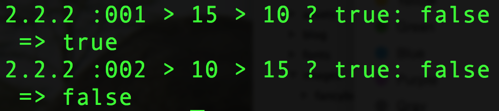
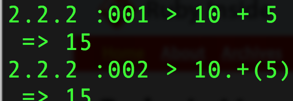
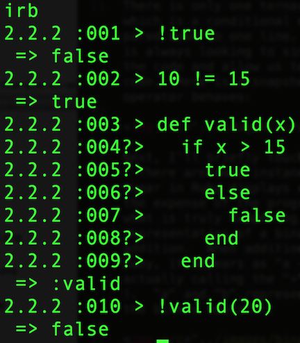
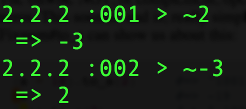
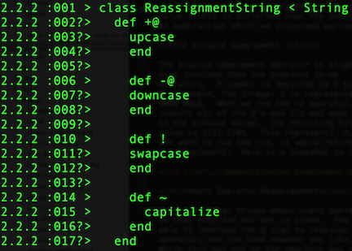
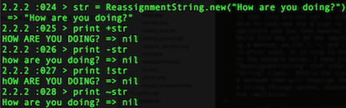

As I begin the third week in the Flatiron School's immersive web program, I wanted to write about operators in Ruby. I will focus mainly on unary operators in this post, so let me count down from 3...2...1!
There is only one ternary operator in Ruby, which is a conditional expression (if/else) pared down to one line. Ruby, as a language, is always looking to simplify the syntax of its code and allow us to build clean, concise code. Here is a snapshot of how a ternary operator behaves:

Next, I'll briefly touch on binary operators. There are many instances where syntactic sugar in Ruby displays cleaner code at the expense of new programmers understanding what is truly happening. The most simplistic representation of a binary operator would be addition. When addition is displayed in Ruby, it appears as "a + b". However, it is actually calling the "+" method on b, or a.+(b). "a" and "b" represent the two parties in the binary operator.

Now, let's get to the meat of this discussion: unary operators. A unary operator is an operator which only takes a single argument in the form of a receiver. I will first discuss the four unary operators that come up most frequently, and I will also touch on unary operator reassignment.
Opposite Operator (!)
The opposite operator is used to represent the opposite of whatever it is placed in front of. For example, !true is equal to false and !false is equal to true. You can put ! in front of an equal sign to represent "not equal to", and you can even place it in front of a method to test equality. Here is some code in irb to indicate these concepts:

Positive/Negative Operators (+/-)
When a plus or minus sign is placed in front of an Integer or a Float and there is no argument before the sign, it will represent a positive or negative interpretation of the value. This is different than the addition or subtraction methods which we discussed earlier.
The Bitwise Complement (~)
The bitwise complement operator is slightly more involved than the previous three operators. A number is depicted by 8 bits. For example, the integer 2 is represented by 0000 0010. When we run the ~2 operator, it inverts all of the 0's and 1's and adds one to the bitwise value. The resulting bitwise value is 1111 1101. This represents -3. If you were to run the ~-3, it would return 2 as the complement. Here is a snapshot in irb:

Unary Operator Reassignment
One of the neat things about unary operators is that they are not set in stone. You are able to leverage the @ sign to reassign the +/- operators and use them however you like. While this may not be the smartest way to set up a method, as the !, +, and - functionality is often used in code, it is nice to know how to do this. In the example below, I have created a class "ReassignmentString" that inherits from the "String" class. Within the class, there are 4 methods that will reassign the behavior of a string through upcase, downcase, swapcase, and capitalize:


In conclusion, unary operators are a shorter way to represent control flow. Instead of having to write if/else statements to depict equality, the ! sign does it for us. In addition, the + and - signs allow us to seamlessly integrate positive and negatives values into our code. Lastly, the involved ~ operator allows us to delve into the bitwise values of integers to see the bitwise complement.